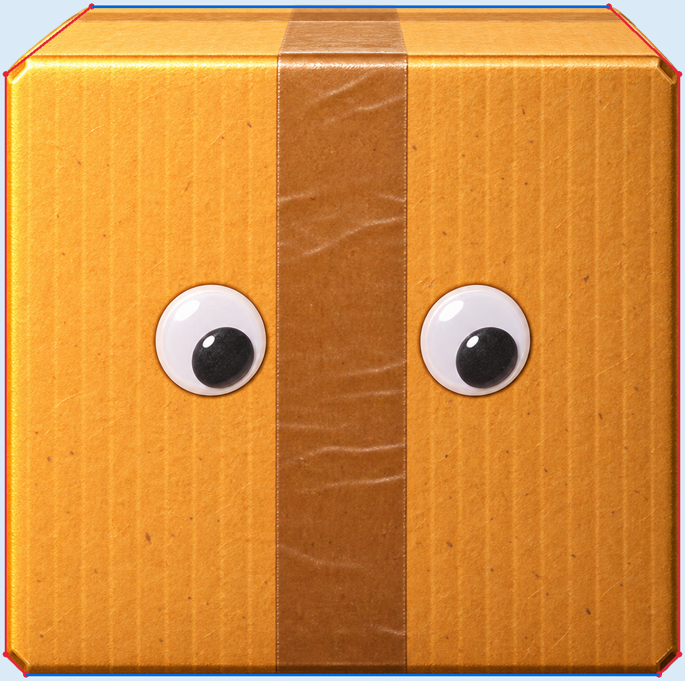
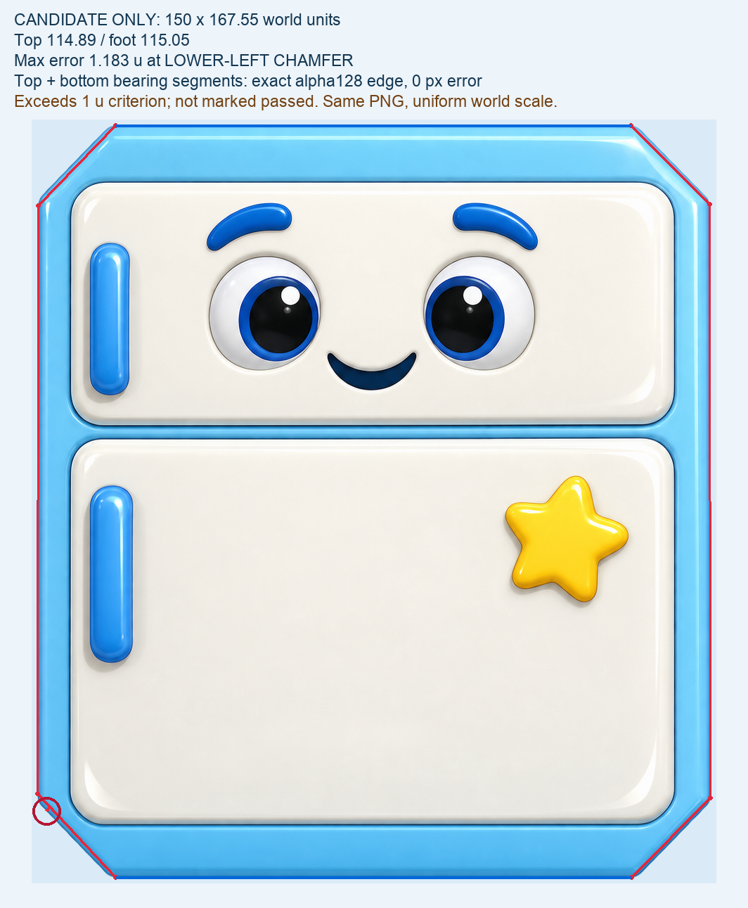
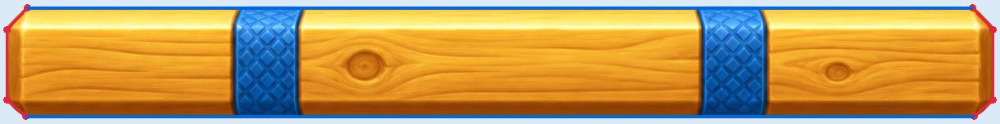

纸箱
- 物理宽 × 高
- 100.91 × 100.00
- 水平顶面 / 底面
- 77.48 / 94.83
- 当前凸形顶点
- 8 点
- 轮廓最大偏差
- 0.754 世界单位

图像保持不变，顶底承托端点与宽高保持不变；将细微倒角简化为单个凸形，不增加隐藏平台。
冰箱
- 物理宽 × 高
- 150.00 × 167.55
- 水平顶面 / 底面
- 114.89 / 115.05
- 当前凸形顶点
- 8 点
- 轮廓最大偏差
- 1.183 世界单位（倒角）

外壳本身为八边形，圆润搪瓷质感保留在内部。根据哑铃双脚及左右交替偏移的承托需求选择 150 宽；同图、同顶点全等比映射，没有横向拉伸。顶底承托线全段与端点为 0 像素误差；左下倒角最大差约 1.183 世界单位（当前画幅约 1.04–1.15 屏幕像素），明确超过原 1 单位目标，未标为满足该阈值。
木板
- 物理宽 × 高
- 260.00 × 28.74
- 水平顶面 / 底面
- 249.19 / 250.06
- 当前凸形顶点
- 8 点
- 轮廓最大偏差
- 0.605 世界单位

保留原图与真实平顶平底，用单个凸形减少细分接触面带来的异常；没有改动图片比例或扩大看不见的承托面。
三件当前 NEXT 与 Sprite 的 alpha 均逐像素一致。顶底数值是按真实图像边界选择的世界尺寸，不是把像素尺寸直接用作物理尺寸。纸箱与木板切换八点轮廓时保总质量；冰箱加宽后仍按约定保持总质量。